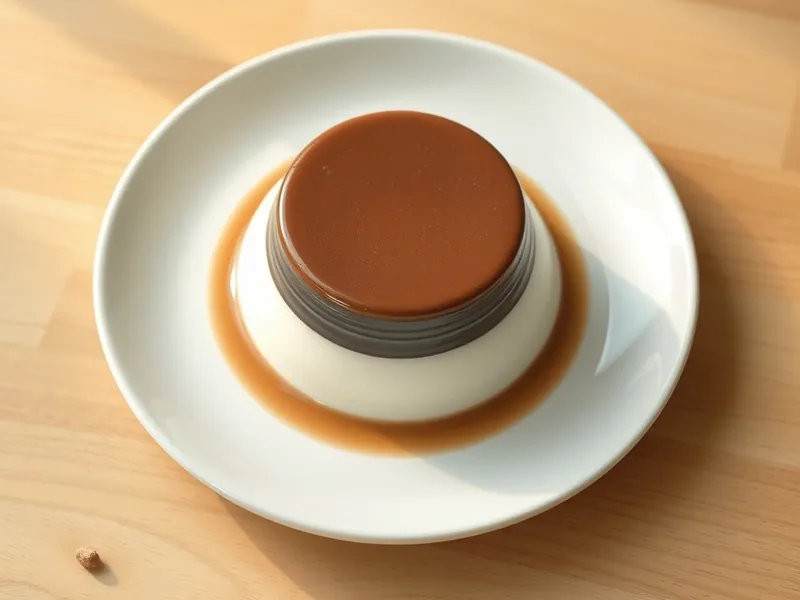

Сметанное желе с какао
Двухцветный десерт из сладкой сметаны: белый и шоколадный слой
260 мин5 порц.359 ккал на порциюБ 7 · Ж 21 · У 36Русская кухня
Открыть в приложении: порции, таймеры, список покупок
Продукты на 5 порц.
- Сметана 20%500 г
- Сахар150 г
- Ванильный сахар1 шт
- Желатин1,5 ст. л.
- Вода100 мл
- Какао-порошок2 ст. л.
Как готовить
- Залейте желатин холодной водой и оставьте на 15 минут.
- Растопите набухший желатин на слабом огне 2 минуты, помешивая, не доводя до кипения.
- Взбейте сметану с сахаром и ванильным сахаром 3 минуты, пока сахар не растворится, тонкой струйкой влейте тёплый желатин.
- Разделите массу пополам, в одну часть вмешайте какао.
- Разлейте белую часть по креманкам и поставьте в холодильник на 30 минут, затем аккуратно налейте сверху шоколадную.
- Охладите желе в холодильнике ещё 3 часа до полного застывания.
Совет. Желатин вливайте в сметану комнатной температуры: в холодную он схватится крупинками.